Brakes - Brake Disc Refinishing Information
00-037July 14, 2010
Applies To:
ALL Models
Brake Disc Refinishing Guidelines
(Supersedes 00-037, dated October 5, 2006, to revise the information marked by the asterisks)
*REVISION SUMMARY
The requirement to refinish new brake discs was removed.*
American Honda does not allow replacement of brake discs under warranty unless the brake disc is beyond its service limit for refinishing. If the brake disc is within its service limit, you must refinish it. Maximum refinishing limits may be found in the Conventional Brakes section of the appropriate service manual.
*Refinish brake discs only when they are scored or out of specification for runout or parallelism. See the appropriate service manual for the specifications.*
American Honda requires refinishing of the front brake discs with an on-car brake lathe that mounts to the steering knuckle. Use of an on-car, steering knuckle-mounted lathe is critical because it corrects runout of the hub and disc as an assembly. Experience has shown that very small amounts of runout, not felt as brake pulsation initially, will grow and become noticeable as discs are subjected to heat and wear over time and mileage. Two on-car brake lathes are recommended. The Kwik-Lathe, Model Number KWY-108000501, is supported with automatic shipments of adapters for new models, when required. The Accu-turn On-car Brake Lathe, Model ACCHONOCLPKG, is also recommended.
A power driver is required for the rear wheel drive NSX and is highly recommended for all others. The model number for the Kwik-Lathe power driver is KWY-108012005; the Accu-turn lathe includes a power driver. Here are some advantages of using power drivers:
^ The disc is rotated at the optimum speed for a smooth and consistent cut.
^ There is no need to climb in and out of the vehicle to start and stop the engine, or shift the transmission.
^ Securing the opposite wheel with a tie-down strap is not required.
^ There is no waiting for the engine to return to idle and no concern about engine speed changes that can adversely affect brake disc cut and finish.
^ The Traction Control System (TCS) or Vehicle Stability Assist (VSA) is not involved.
^ Consistent cutting speed increases cutting tool life.
ORDERING INFORMATION
Order brake lathes and component parts through the Acura Tool and Equipment Program. To place an order, call or use the fax order form provided in your Acura Tool and Equipment Program Catalog. Phone lines are open Monday thru Friday from 7:30 am to 7:00 pm Central Time.
WARRANTY CLAIM INFORMATION
None, this bulletin is for information only.
FRONT BRAKE DISCS
The following guidelines show the Kwik-Way lathe setup, the Accu-turn lathe setup is similar.
Setting Up the Vehicle
Put the transmission in Neutral. If you are not using the power drive system, start the engine, and let it warm up to its normal operating temperature so the idle speed will stabilize to its lowest rpm.
NOTE:
MDX, RDX and all 4WD vehicles must have all four wheels off of the shop floor.
Raise the vehicle on a lift.
Check for loose wheel bearings. You must replace loose wheel bearings before you refinish the brake discs. If you do not, the brake lathe will not correct for brake disc runout, resulting in an uneven finish and brake pulsation.
Remove the front wheels, then reinstall the wheel nuts with flat washers to compensate for the removed wheel. Torque the wheel nuts to the required specification (see the appropriate service manual).
Remove the caliper assembly. Use a wire or a S-hook to hold the caliper to the spring or damper tower. Do not kink the brake hose or use it to support the caliper. If you are not using the power drive system and the vehicle has TCS or VSA, make sure you install a brake pad spreader between the pads on the hanging caliper. Also, make sure the system is turned off anytime the engine is started. If the system is not turned off, the brakes may activate, causing the brake pads on the hanging caliper to hit each other or the caliper pistons to fall out.
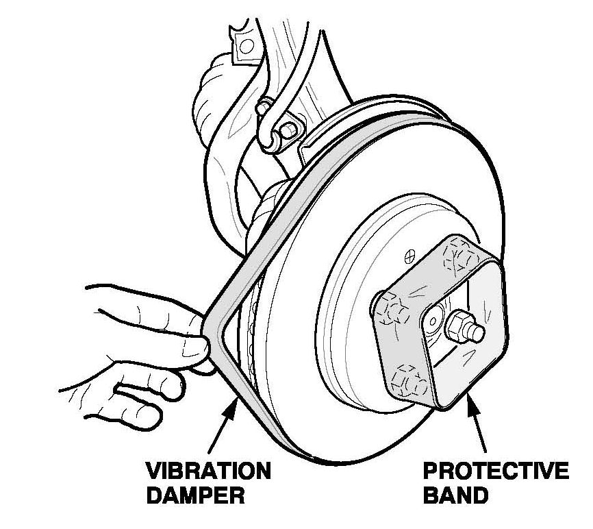
Install the vibration damper on the brake disc. If you are not using the power drive system, make sure you install the protective band around the wheel nuts.
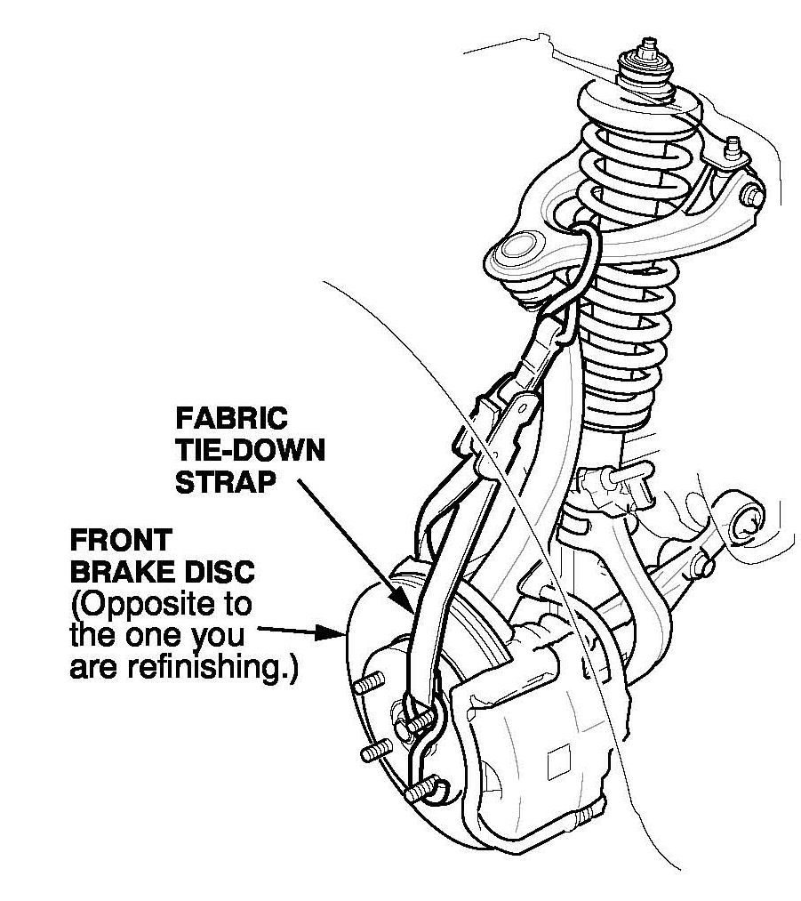
If you are not using the power drive system, use a fabric tie-down strap to secure the brake disc that is opposite to the one you are refinishing. If you are working on an Integra Type-R, do not use a tie-down strap; let both front wheels turn freely.
Mounting the Brake Lathe
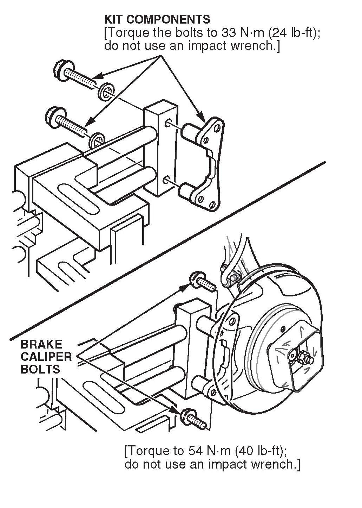
Remove the tool bed from the brake lathe, then mount the brake lathe to the steering knuckle with an Acura 1-piece speed mount. These mounts provide quicker, more accurate mounting, and can be ordered through the Acura Tool and Equipment Program (see ORDERING INFORMATION).
Acura 1-Piece Speed Mounts
^ P/N KWY-108006000 (For most models)
^ P/N KWY-108007500 (MDX with two-piston calipers)
^ P/N KWY-108009000 (TL with Brembo brakes)
^ P/N KWY-108009500 (2005-07 RL)
Attaching the Power Drive System
1. Make sure the drive motor assembly on the power drive system is level with the brake disc.
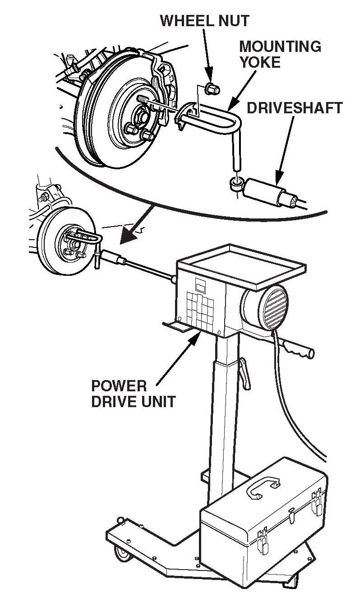
2. Attach the mounting yoke to the brake disc, and secure it with one of the wheel nuts. Torque the wheel nut to the required specification (see the appropriate service manual).
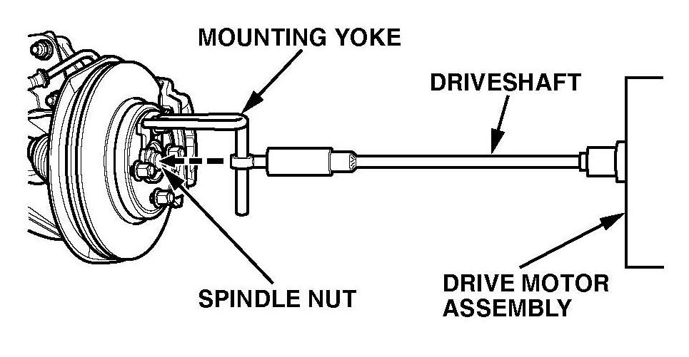
3. Attach the driveshaft on the drive motor assembly to the mounting yoke, making sure the center line of the driveshaft is level with the spindle nut on the wheel hub.
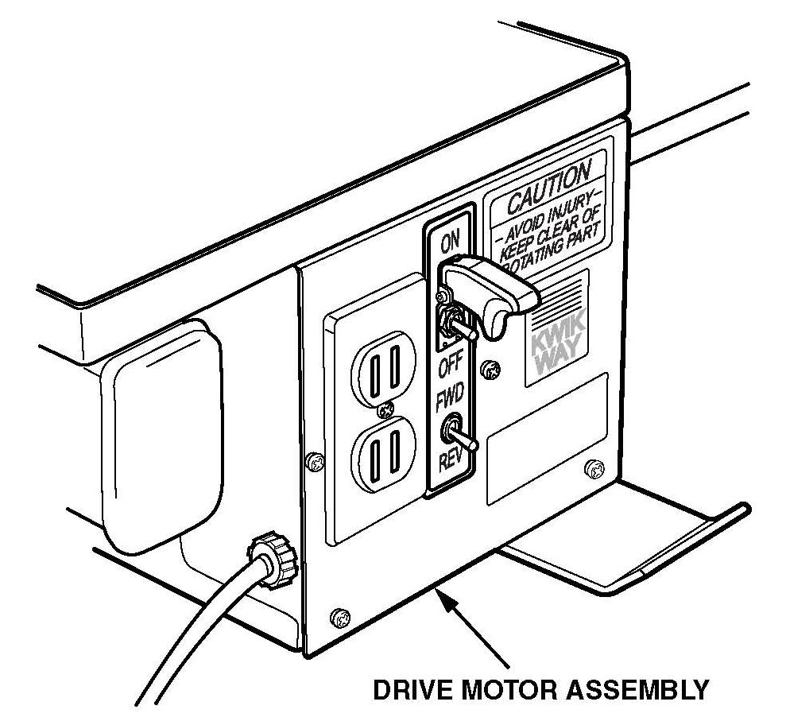
4. Set the lower toggle switch on the drive motor assembly to FWD (counterclockwise rotation) or REV (clockwise rotation).
Setting Up and Adjusting the Brake Lathe
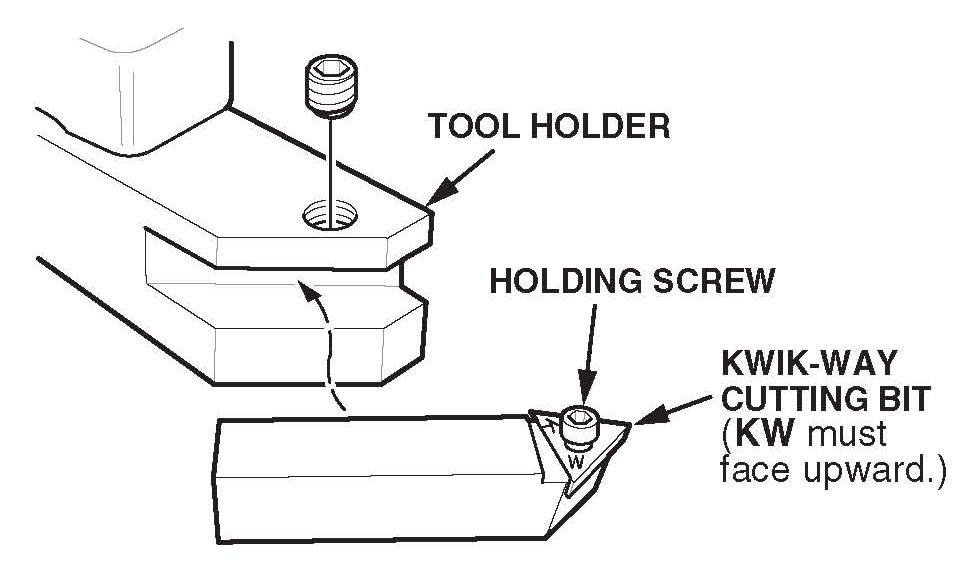
Use Kwik-Way cutting bits, P/N KWY-109109223, and the holding screws that come with them. These bits are stamped KW and are available through the Acura Tool and Equipment Program (see ORDERING INFORMATION).
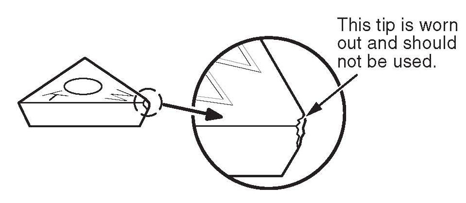
Before you use the brake lathe, inspect the tips of the cutting bits with a magnifying glass to make sure the tips are not worn out. Each bit has three tips. If a tip is worn, rotate the bit, and use a new tip. A worn tip produces a poor finish and may cause chattering.
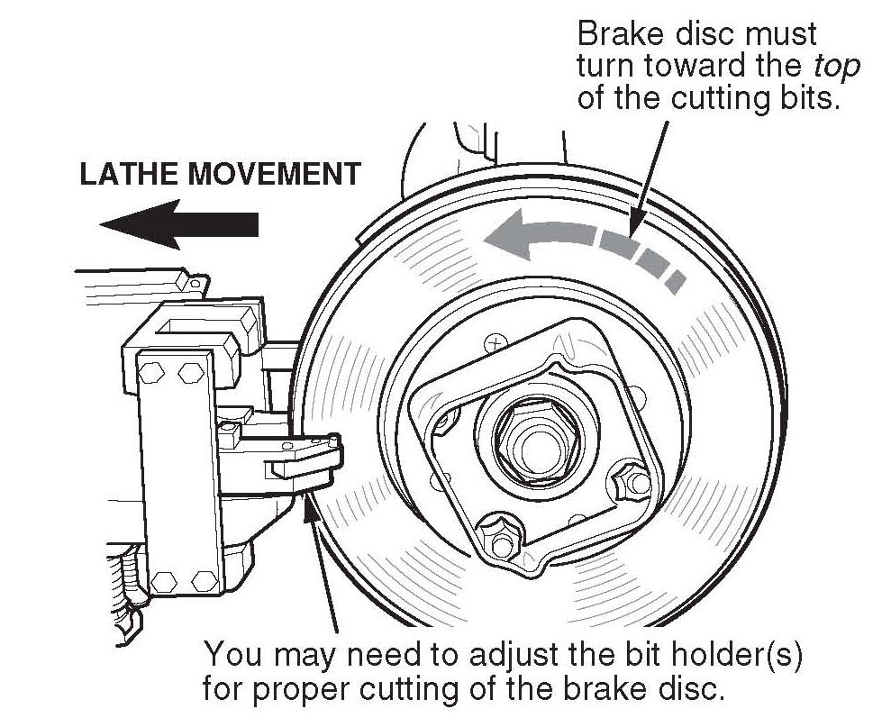
Reinstall the tool bed on the brake lathe with the top of the cutting bits facing up and the feed knobs facing down. Adjust the tool bed until the brake disc is centered between the cutting bits. For proper refinishing, the brake disc must turn toward the top of the cutting bits.
Do not set the cutting depth on the brake lathe to more than 0.2 mm (0.008 in.) This is two divisions on the cutting knob. Make sure you start your cut at least 3 mm (0.12 in.) beyond the worn area on the brake disc.
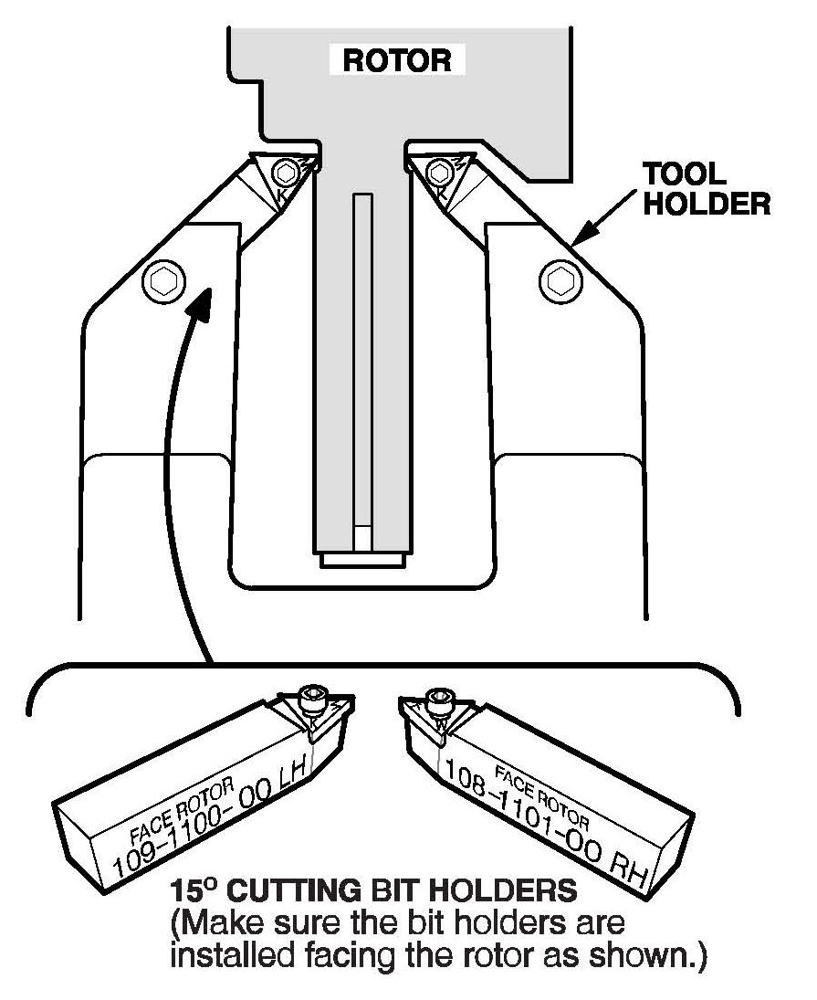
If you are cutting a larger diameter brake disc such as that used on MDXs and 1986-90 Legends, make sure you use the 150 cutting bit holders. These bit holders available through the Acura Tool and Equipment Program (see ORDERING INFORMATION), supersede the original bit holders and provide better cutting coverage for larger diameter brake discs. Each bit holder is clearly marked for proper installation on the tool holder.
Cutting the Brake Disc
To get the smoothest cut and the best brake disc finish, always use the slowest feed speed on the tool bed feed motor. Place the drive belt on the smallest pulley of the feed motor and on the largest pulley of the hand wheel.
Make sure the lower toggle switch on the power drive system drive motor assembly is set to the proper rotation to turn the brake disc toward the top of the cutting bits. Plug the tool bed feed motor into the power outlet on the drive motor assembly, then turn on the drive motor with the upper toggle switch on the assembly.
If you are not using the power drive system, make sure the transmission is in 1st gear or Reverse (2nd gear on Integra Type-Rs) and the engine is idling, but not at a fast idle. If the transmission and engine are at higher gears and speeds, you will damage the cutting bits.
Turn on the tool bed feed motor, and snap it into place; there should be tension on the feed belt. Cut the brake disc until the cutting bits clear the outer edge of the disc. The cutting bits should produce a smooth, consistent finish with no chatter marks or grooves.
If the disc did not clean up entirely on the first pass, reset the brake lathe and make a second pass.
Finishing the Job
Remove the vibration damper and the protective band (if used). Use a micrometer to measure the thickness of the brake disc. Make sure the thickness is within the service manual specifications. Clean the brake disc with soapy water or brake cleaner, then wipe it dry. Use a vacuum cleaner to remove any dust or chips, but do not use compressed air.
Unplug the tool bed feed motor from the drive motor assembly, and remove the mounting yoke from the brake disc. Remove the speed mount from the steering knuckle.
Apply a small amount of Molykote 77 grease to the brake pad shims. Reinstall the caliper assembly. (If you did not use the power drive system, use the brake pad spreader to push the pistons back into the caliper.) Torque the nuts and bolts to the required specification (see the appropriate service manual).
Refinish the other front brake disc using the same guidelines.
Check the brake fluid level, then test-drive the vehicle to make sure the brake pedal is firm and does not pulsate. Lightly apply the brakes about 20 times during the test-drive to seat the brake pads.
REAR BRAKE DISCS
It is possible to use an on-car lathe on some models if the rear caliper mounts are low enough to allow the lathe to clear the vehicle body. A power driver is needed for front wheel drive models. Refinish rear brake discs on bench mounted equipment if necessary.
Follow the same guidelines you used for refinishing front brake discs, noting these differences:
^ MDX: If you are not using the power drive system, make sure the transmission is in low gear and the VTM-4 LOCK switch is on (the light in the switch is lit).
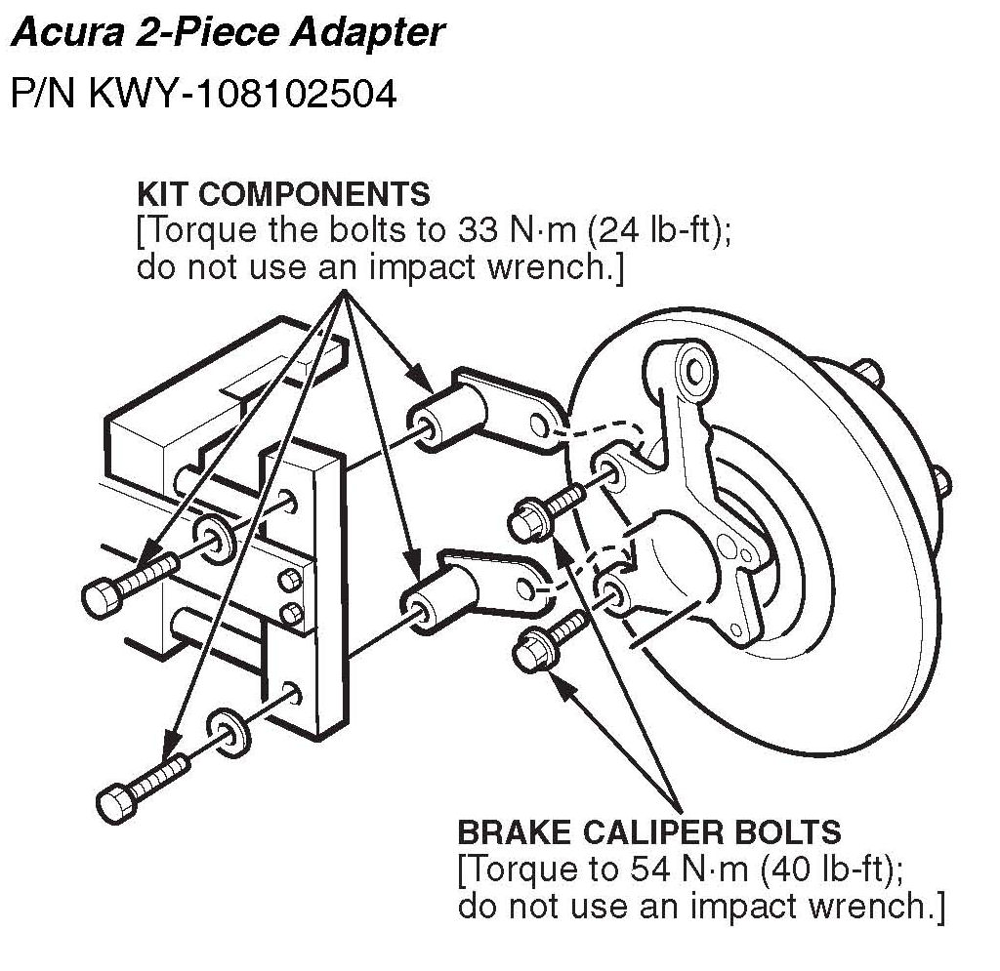
^ All others: Mount the brake lathe to the rear knuckle with the Acura 2-Piece Adapter (P/N KWY-108102504). You can order the 2-piece adapter through the Acura Tool and Equipment Program (see ORDERING INFORMATION).

Disclaimer